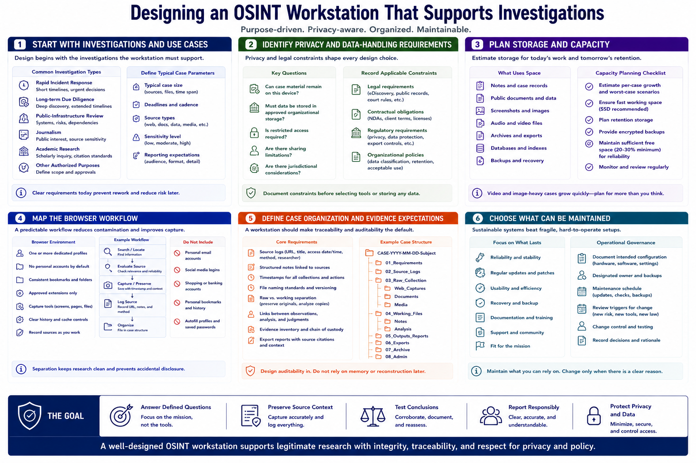

Workstation Goals and Requirements
Connecting to LMS... Progress: in progress

Narration
Design begins with the investigations the workstation must support. A rapid incident-response task has different needs from long-term due diligence, public-infrastructure review, journalism, or academic research. Define typical case size, deadlines, source types, sensitivity, and reporting expectations.
Identify privacy and data-handling requirements. Determine whether case material can remain on one device, must use approved organizational storage, or needs restricted access. Record legal, contractual, regulatory, and policy constraints before selecting tools.
Estimate storage for notes, public documents, approved captures, archives, exported records, and backups. Video and image-heavy cases grow quickly. Capacity planning should include working space, retention, encrypted backup, and enough free space for reliable operation.
Map the browser workflow. Analysts may need one or more dedicated profiles, consistent bookmarks, approved extensions, capture tools, and a way to record sources as they work. Personal accounts should not be part of the default research environment.
Define case organization and evidence expectations. A workstation should support source logs, structured notes, timestamps, file naming, raw-versus-working separation, and links between observations and judgments. Auditability should be designed in rather than reconstructed after the report.
Choose requirements that can be maintained. Reliability, updates, recovery, and usability are more valuable than elaborate isolation that users cannot operate. Document the intended configuration, responsible owner, maintenance schedule, and conditions that would justify changing the design.